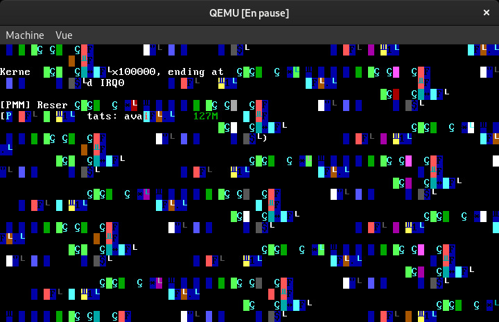

The absolute state of things...
In my first run in summer 2015, I programmed the components listed in the following categories, pretty much in that order. I’ve barely touched them since, so explaining each of them here should help me get some knowledge back.
